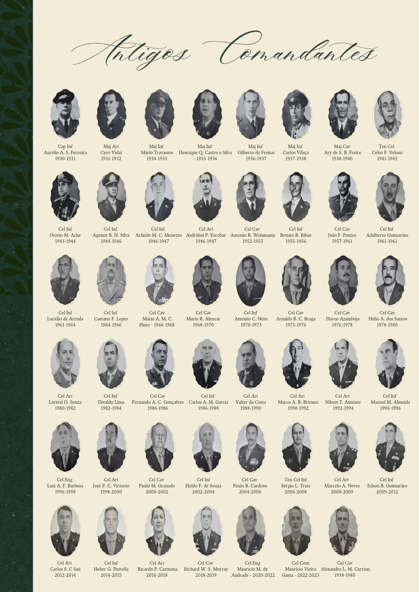
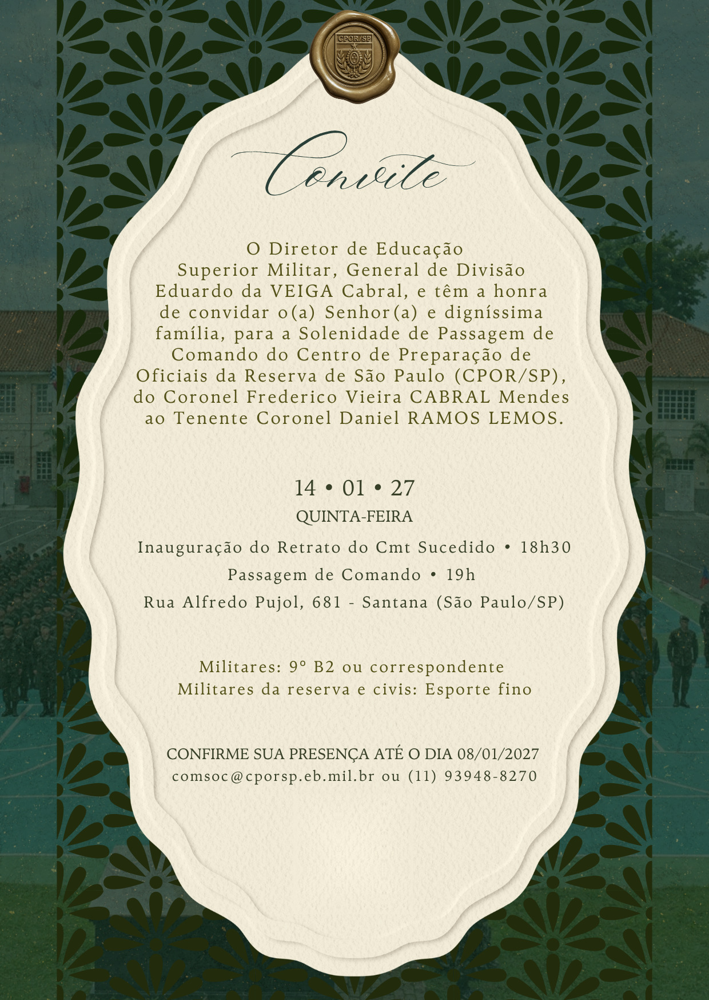

Confirmar presença
O Diretor de Educação Superior Militar, General de Divisão Eduardo da VEIGA Cabral, tem a honra de convidar
o(a) Senhor(a) e digníssima família para a Solenidade de Passagem de Comando do Centro de Preparação de
Oficiais da Reserva de São Paulo (CPOR/SP), do Coronel Frederico Vieira CABRAL Mendes ao Tenente Coronel
Daniel RAMOS LEMOS. Quinta-feira, 14 de janeiro de 2027. Inauguração do Retrato do Comandante Sucedido às
18h30. Passagem de Comando às 19h. Rua Alfredo Pujol, 681, Santana, São Paulo/SP. Traje: militares, 9º B2 ou
correspondente; militares da reserva e civis, esporte fino. Confirme sua presença até 08/01/2027 pelo e-mail
comsoc@cporsp.eb.mil.br ou pelo telefone (11) 93948-8270.